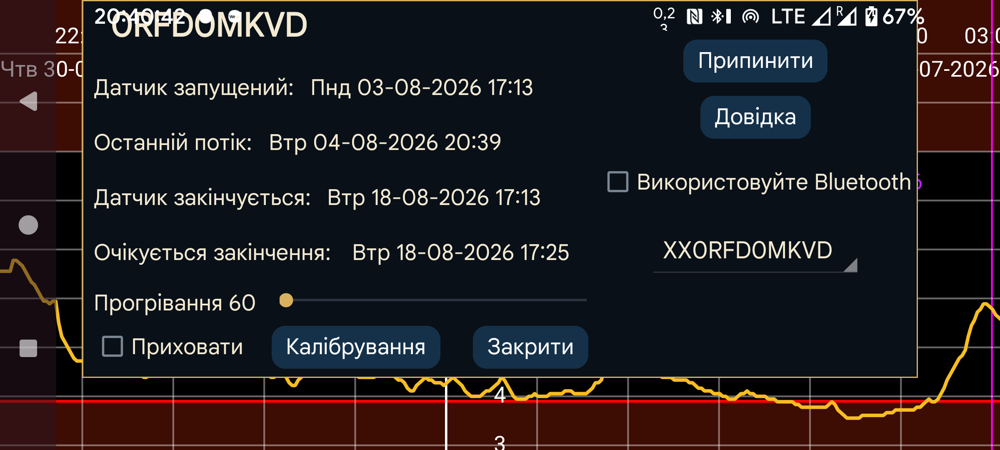

Надає інформацію про датчики, коли Juggluco працює як дзеркало потокових значень:
Датчик запущений: час запуску датчика. Для датчиків Libre це за одну годину до перших значень глюкози.
Останнє сканування: час останнього сканування датчика. Сканування зараховується також тоді, коли дані не отримано через помилку датчика або повідомлення про його заміну.
Останній потік: часова позначка найновішого вимірювання глюкози, отриманого через Bluetooth.
Датчик закінчується: час завершення, указаний виробником датчика.
Очікується закінчення: Деякі датчики фактично працюють довше за офіційний строк. Libre 1 і 2 та Dexcom G7/ONE+ працюють на 12 годин довше, датчики Sibionics — майже на 10 днів довше. Лише Libre 3 не працюють довше за офіційний час завершення.
Приховати: приховувати цю криву, коли прапорець установлено. Щоб знову зробити її видимою, можна зняти прапорець або натиснути «Показати» у правому нижньому куті екрана.
Припинити: припинити отримання значень глюкози від цього датчика через Bluetooth. Щоб використовувати його знову, потрібно повторно відсканувати датчик.
Використовуйте Bluetooth: підключати цей пристрій безпосередньо до датчиків через Bluetooth. Так можна змінити пристрій, який напряму підключається до датчика. На попередньому пристрої пряме підключення потрібно вимкнути. Також змініть налаштування дзеркала на обох пристроях, щоб значення Потік надсилалися у протилежному напрямку. Якщо інша сторона — годинник Wear OS, це можна зробити однією кнопкою: Ліве меню→Дивитися→Налаштування Wear OS→«Пряме з’єднання датчик–годинник».
Якщо використовується кілька датчиків, можна вибрати датчик, інформацію про який слід показати.
Калібрування: Якщо в лівому меню→Налашт.→Калібрування вказано мітку глюкози крові й через ліве середнє меню→Нове значення введено невиключені вимірювання глюкози, натисніть кнопку «Калібрування», щоб переглянути список створених калібрувань. Див.: https://www.juggluco.nl/Juggluco/index.html#calibration
Прогрівання: Для датчиків Sibionics і Linx/Lumiflex/Aidex X можна змінити тривалість прогрівання в хвилинах. Усі функції ігноруватимуть дані за цей період: крива на екрані, статистика, експортовані дані й дані вебсервера. Це застосовується також заднім числом.